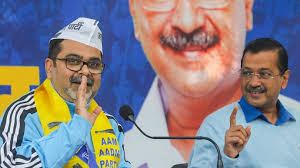
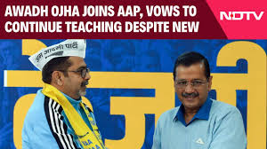
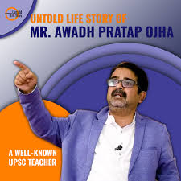

क्या ओझा उठा पाएंगे आम आदमी का बोझा?
भारतीय राजनीति में अगर किसी पार्टी के लिए हाल के दिन सबसे कठिन साबित हुए हैं, तो वह है आम आदमी पार्टी (आप)। हरियाणा चुनाव में कांग्रेस का हाथ थामने से इनकार और पार्टी के अंदरूनी विवादों से लेकर, अरविंद केजरीवाल की जेल यात्रा तक, "आप" हमेशा सवालों के घेरे में रही है।
"आप" ने राजनीति के जवाब देने के अपने अंदाज को बदला है। अब वह चुप्पी तोड़ते हुए नए-नए दांव खेल रही है। पहले, अतिशी को मुख्यमंत्री उम्मीदवार के तौर पर प्रस्तुत किया और अब, युवाओं को आकर्षित करने के लिए एक चर्चित शिक्षक अवध ओझा को पार्टी में शामिल किया।
अवध ओझा: शिक्षा से राजनीति तक का सफर
अवध ओझा का जन्म 3 जुलाई 1984 को एक मध्यमवर्गीय लेकिन संपन्न परिवार में हुआ। उनके पिता पोस्ट मास्टर की नौकरी करते थे और उन्हें हर कार्य के लिए प्रेरित करते थे। हालांकि ओझा पढ़ाई में कमजोर थे, लेकिन उनका दिमाग तेज था और वह चीजों को जल्दी समझ जाते थे। इलाहाबाद जाकर उन्होंने पढ़ाई को गंभीरता से लिया और सिविल सेवा की तैयारी शुरू की।
राजनीति में अवध ओझा की नई पारी
राजनीति के प्रति ओझा का रुझान बचपन से था। उनका मानना था कि सच्चा "राजा" वही हो सकता है जो राजनेता बने। आज उनका यह सपना सच हो गया है। "आप" में शामिल होने के बाद, पार्टी ने उन्हें एक नई पहचान दी है।
युवाओं के बीच उनकी लोकप्रियता और उनकी शिक्षण शैली "आप" के लिए फायदेमंद साबित हो सकती है। राजनीतिक विश्लेषकों का मानना है कि ओझा का प्रवेश, पार्टी के लिए एक सकारात्मक कदम हो सकता है। हालांकि, राजनीति का क्षेत्र शिक्षा से बिल्कुल अलग है। ओझा को यहां हर कदम सोच-समझकर उठाना होगा।
क्या ओझा उठा पाएंगे "आप" का राजनीतिक बोझ?
"आप" की इस नई रणनीति से छात्रों और युवाओं में उत्सुकता बढ़ी है। हर कोई जानना चाहता है कि ओझा के फैसले और कार्यशैली कैसी होगी। क्या वह अपनी लोकप्रियता को राजनीति में भुना पाएंगे?